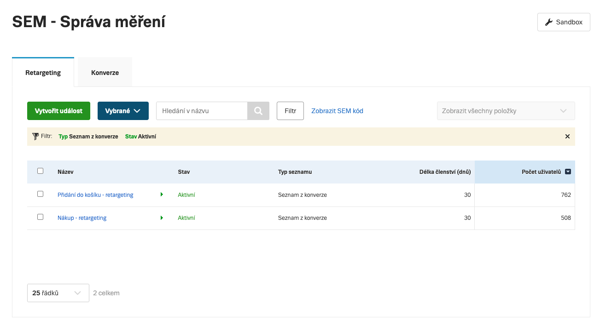
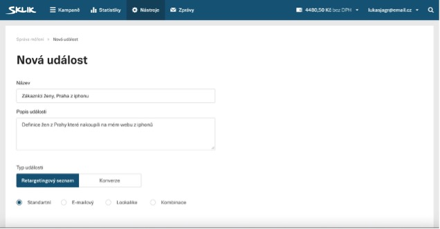
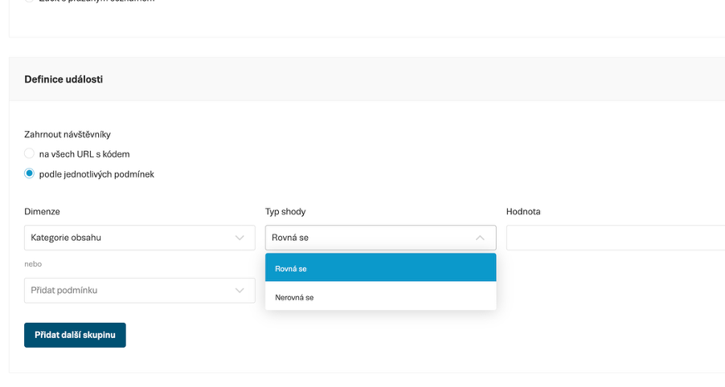

Retargetingové seznamy
SEM nahrazuje staré retargetingové kódy jednotným systémem retargetingových seznamů spravovaných v Správě měření. Seznamy se naplňují automaticky na základě SEM událostí.
Typy retargetingových seznamů
V SEM existuje šest typů retargetingových seznamů:
| Typ | Popis | Podmínky |
|---|---|---|
| Standardní seznam | Ručně vytvořený seznam na základě kombinace podmínek (URL, content_type, hodnota nákupu, pohlaví…) | Plně konfigurovatelné |
| Kombinace | Kombinace více existujících retargetingových seznamů pomocí logických operátorů | Plně konfigurovatelné |
| E-mailový seznam | Seznam vytvořený nahráním hashovaných e-mailů zákazníků | – |
| Dynamický seznam | Automaticky pro každou napojenou provozovnu Seznam Nákupy – vznikají tři seznamy: Návštěvníci produktů, Návštěvníci produktů na webech Seznamu, Návštěvníci kategorií | Nelze upravovat – viz Dynamický retargeting |
| Lookalike seznam | Seznam uživatelů podobných těm v existujícím zdrojovém seznamu | Nelze upravovat |
| Seznam z konverze | Automaticky ke každé konverzní události – obsahuje uživatele, kteří konverzi dokončili | Nelze upravovat |
Seznam z konverze
Ke každé konverzní události SEM automaticky vytvoří odpovídající retargetingový seznam. Tento seznam obsahuje uživatele, kteří danou konverzi dokončili – lze ho využít pro remarketing nebo jako vyloučené publikum v kampaních. Podmínky těchto seznamů nelze ručně upravovat.
Seznamy z konverzí se zobrazují v kartě Retargetingové seznamy ve Správě měření.

Vlastní retargetingový seznam
Vlastní seznam definujete v kartě Retargetingové seznamy kombinací podmínek na základě SEM událostí. Pomocí podmínek určíte, při jaké události a jakých parametrech se uživatel do seznamu zařadí.

Podporované podmínky
| Podmínka | Příklad hodnoty |
|---|---|
| URL stránky | obsahuje /produkt/ |
| Typ obsahu |
Hodnota se odvozuje automaticky z typu události: Produkt – ViewContent / PageView + content_type: 'product'Kategorie – ViewContent / PageView + content_type: 'product_group'Stránka – PageView bez content_typeVyhledávání – Search |
ID produktu (contents[].id) | SKU-12345 |
Název obsahu (content_name) | Samsung QLED 55" |
Kategorie obsahu (content_category) | Elektronika | Televize | LCD televizory |
Hodnota nákupu (value) | větší než 1000 |
| Pohlaví | žena |
| Město | Praha |
| Stát | cz (ISO 3166-1 alpha-2) |
| Zdroj události | Web / App |

Parametry SEM skriptu pro podmínky
Aby podmínky fungovaly, musí implementace posílat odpovídající parametry v SEM událostech:
| Podmínka v rozhraní | Parametr SEM skriptu |
|---|---|
| URL | event_url |
| Typ obsahu | content_type |
| ID produktu | id (v objektu v poli contents) |
| Název obsahu | content_name |
| Kategorie | content_category |
| Hodnota nákupu | value |
| Pohlaví | ge |
| Město | ct |
| Stát | country |
| Zdroj události | event_source |
Podmínky uvnitř jednoho objektu v poli contents se vyhodnocují jako AND (všechny musí platit). Podmínky přes více objektů v poli fungují jako OR (stačí splnit jeden).
Přechod ze starých retargetingových kódů
Po přepnutí na SEM (kliknutím na Začít používat SEM) platí:
- Staré retargetingové kódy přestanou sbírat data okamžitě
- Stávající retargetingové seznamy se přenášejí do SEM v momentě přepnutí 1:1 – sestavy s těmito seznamy poběží po přepnutí na SEM dál, nemusíte nic v kampaních ani sestavách měnit nebo přidávat
- Nové SEM retargetingové seznamy začínají sbírat data ihned po přepnutí – vytvářet je lze až po přepnutí
Původní retargetingové seznamy z konverzí zůstávají po migraci ve stejném nastavení, jejich konfiguraci však nebude možné dále měnit. Publikum těchto seznamů bude přirozeně klesat, protože jsou napojeny na staré konverze, které se po přechodu na SEM již nebudou zaznamenávat. Doporučujeme proto po migraci začít používat nové retargetingové seznamy vytvořené ze SEM konverzí.
Po potvrzení přechodu na SEM nelze pokračovat ve sběru dat přes staré skripty. Doporučujeme mít konverze v Správě měření nastaveny ještě před samotným přepnutím.
Retargeting lists
SEM replaces the old retargeting codes with a unified system of retargeting lists managed in Event Management. Lists are populated automatically based on SEM events.
Types of retargeting lists
SEM has six types of retargeting lists:
| Type | Description | Conditions |
|---|---|---|
| Standard list | Manually created list based on a combination of conditions (URL, content_type, purchase value, gender…) | Fully configurable |
| Combination | A combination of multiple existing retargeting lists using logical operators | Fully configurable |
| Email list | A list created by uploading hashed customer emails | – |
| Dynamic list | Created automatically for each store linked to Seznam Shopping – three lists are created: Product visitors, Product visitors on Seznam websites, Category visitors | Cannot be edited – see Dynamic retargeting |
| Lookalike list | A list of users similar to those in an existing source list | Cannot be edited |
| Conversion list | Created automatically for each conversion event – contains users who completed the conversion | Cannot be edited |
Conversion list
For each conversion event, SEM automatically creates a corresponding retargeting list. This list contains users who completed the given conversion – it can be used for remarketing or as an excluded audience in campaigns. The conditions of these lists cannot be edited manually.
Conversion lists are displayed in the Retargeting lists tab in Event Management.
Custom retargeting list
You define a custom list in the Retargeting lists tab by combining conditions based on SEM events. The conditions determine which event and parameters cause a user to be added to the list.
Supported conditions
| Condition | Example value |
|---|---|
| Page URL | contains /product/ |
| Content type |
The value is derived automatically from the event type: Product – ViewContent / PageView + content_type: 'product'Category – ViewContent / PageView + content_type: 'product_group'Page – PageView without content_typeSearch – Search |
Product ID (contents[].id) | SKU-12345 |
Content name (content_name) | Samsung QLED 55" |
Content category (content_category) | Elektronika | Televize | LCD televizory |
Purchase value (value) | greater than 1000 |
| Gender | female |
| City | Praha |
| Country | cz (ISO 3166-1 alpha-2) |
| Event source | Web / App |
SEM script parameters for conditions
For conditions to work, the implementation must send the corresponding parameters in SEM events:
| Condition in the interface | SEM script parameter |
|---|---|
| URL | event_url |
| Content type | content_type |
| Product ID | id (in the object within the contents array) |
| Content name | content_name |
| Category | content_category |
| Purchase value | value |
| Gender | ge |
| City | ct |
| Country | country |
| Event source | event_source |
Conditions within a single object in the contents array are evaluated as AND (all must be true). Conditions across multiple objects in the array work as OR (only one needs to be satisfied).
Migration from old retargeting codes
After switching to SEM (by clicking Start using SEM):
- Old retargeting codes stop collecting data immediately
- Existing retargeting lists are transferred to SEM at the moment of switch-over 1:1 – ad groups using these lists will continue to run after the switch-over, you do not need to change or add anything in campaigns or ad groups
- New SEM retargeting lists start collecting data immediately after the switch-over – they can only be created after switching
The original retargeting lists from conversions remain in the same configuration after migration, but their settings cannot be changed further. The audience of these lists will naturally decline because they are linked to old conversions that will no longer be recorded after the transition to SEM. We therefore recommend starting to use new retargeting lists created from SEM conversions after migration.
Once you confirm the transition to SEM, data collection via old scripts cannot be resumed. We recommend setting up conversions in Event Management before performing the switch-over.